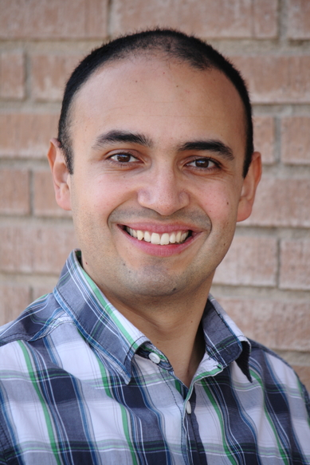

I am a professor at the School of Engineering and Technology, Universidad de Montemorelos, Mexico. I hold a Ph.D. in Computer Science from Universitat Politècnica de València (Spain), a MSc in Information and Communication Technology from Assumption University (Thailand), and a BSc in Computer Science Engineering from Universidad EAFIT (Colombia). My research interests include Services Computing, Model-Driven Engineering, Models at Runtime, Autonomic Computing, and Dynamic Software Product Lines. I have contributed to publications in journals, book chapters, and international conferences, such as SPLC, ECOWS, MODELS, ICWS, IUPESM WCMPBME, ICAI and SERP. I have managed global enterprise software development projects. I have worked in universities, IT companies, and research groups of four continents (America, Asia, Australia, and Europe). I lead the recently created Global Software Lab at the School of Engineering and Technology, Universidad de Montemorelos.
 Read my latest scholar article on the European Journal of Operational Research (JCR 5-Year IF: 2.911): Augmenting measure sensitivity to detect essential, dispensable and highly incompatible features in mass customization.
Read my latest scholar article on the European Journal of Operational Research (JCR 5-Year IF: 2.911): Augmenting measure sensitivity to detect essential, dispensable and highly incompatible features in mass customization.